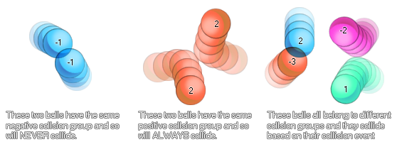

physics_fixture_set_collision_group(fixture, group)
| Argument | Description |
|---|---|
| fixture | the fixture that is to be bound |
| group | the group that this fixture is assigned to (either a positive value, 0, or a negative value) |
Returns: N/A
Once you have created your fixture you can define it as being
part of a collision group. This means that you can tell instances
with that fixture to always collide or never collide
with other instance that have fixtures bound to them with the same
collision group. The values that can be assigned are based on
positive or negative numbers, with 0 being the default value
(meaning that the instance with this fixture setting is ignored
unless a collision event is created for it). Here is an image to
help explain:

As you can see, setting collision groups can be very useful to
create complex physical bodies that interact with the physical
world around them, but not with each other. However, it should be
noted that due to the complexity of calculating collisions based on
groups like this, it is recommend that you try to keep the number
of groups in use in any one room to an absolute minimum.
physics_fixture_set_collision_group(fix_Wheel, -1);
The code above will set the fixture indexed in the variable "fix_Wheel" to be part of the group "-1".